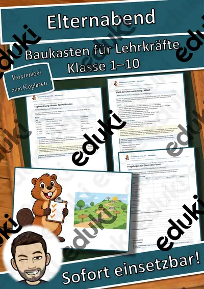
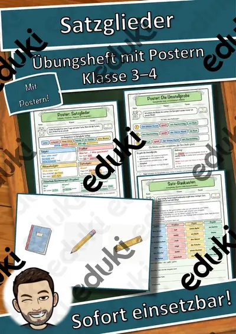
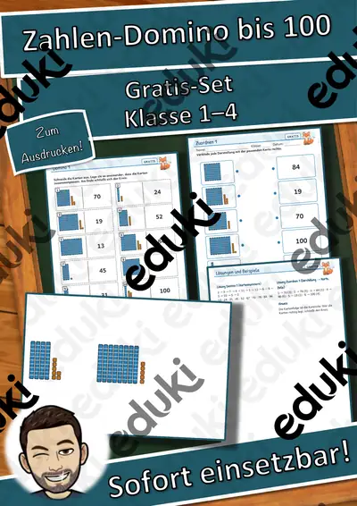

Der erste Schultag in Klasse 1: Baukasten für Lehrkräfte – kostenlos
KostenlosMaterial auf eduki ansehen
Einschulung und erster Schultag: Vorbereitung, Einschulungsfeier, erste Unterrichtsstunde, Elternbetreuung, Elternbriefe und Erste-Woche-Plan.
Kostenlos und frei anpassbar: Das PDF zum Ausdrucken und die Word-Datei zum Bearbeiten sind dabei. Die Module sind in sich abgeschlossen, du wählst nur aus, was du brauchst, und kopierst es in deine Unterlagen. Mit Inhaltsverzeichnis und Seitenverweisen.
Rechtliche Angaben zu den Bundesländern sind mit Quelle und Stand versehen; bitte vor Gebrauch bei deinem Kultusministerium prüfen.
Texte KI-gestützt und von mir geprüft. Die Bilder sind eigene KI-gestützte Zeichnungen (keine Fotos).
Enthalten (39 Seiten): Vorlagen, Checklisten, Elternbriefe, Gesprächsleitfäden
FachSachunterricht
KlasseKl. 1
SchulformGrundschule
MaterialartUnterrichtsmaterial
Ähnliche Materialien

Lernentwicklungsgespräche Klasse 1–10: Baukasten für Lehrkräfte – kostenlos

Elternabend Klasse 1–10: Baukasten für Lehrkräfte – kostenlos

Übertritt nach Klasse 4: Baukasten für Lehrkräfte – kostenlos

Fächer-Steckbriefe A–Z Klasse 1–10: Baukasten für Lehrkräfte – kostenlos

Fächerwahl und Infoabende an allen Schularten: Baukasten für Lehrkräfte – kostenlos

Lesespur: Das Pausenfrühstück: fit in den Schultag – Lesespurgeschichte mit Rätseln (Klasse 1)

Satzglieder – Übungsheft mit Postern, Umstellprobe, Fragen und Satz-Baukasten Kl. 3–4
